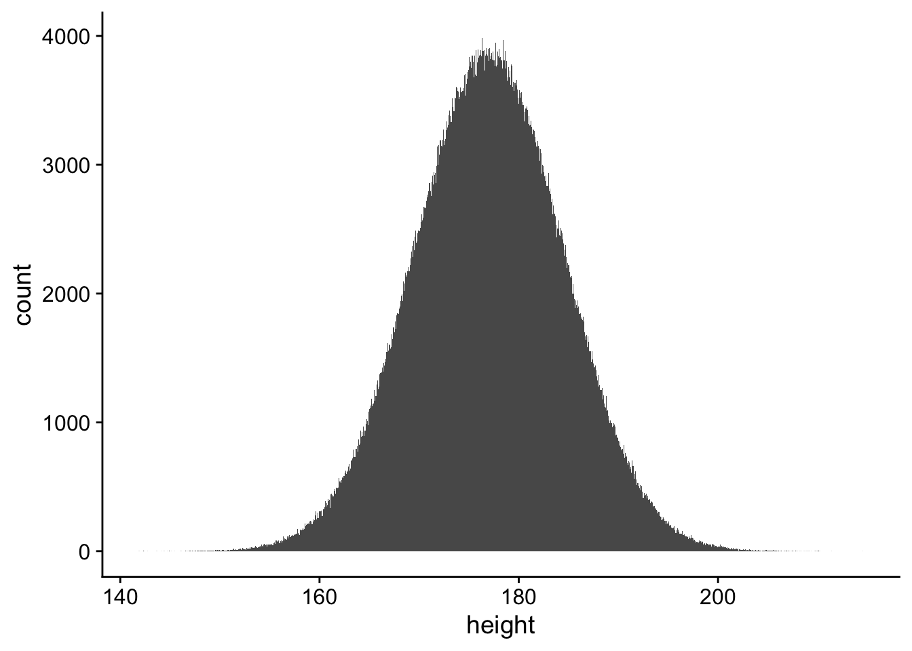
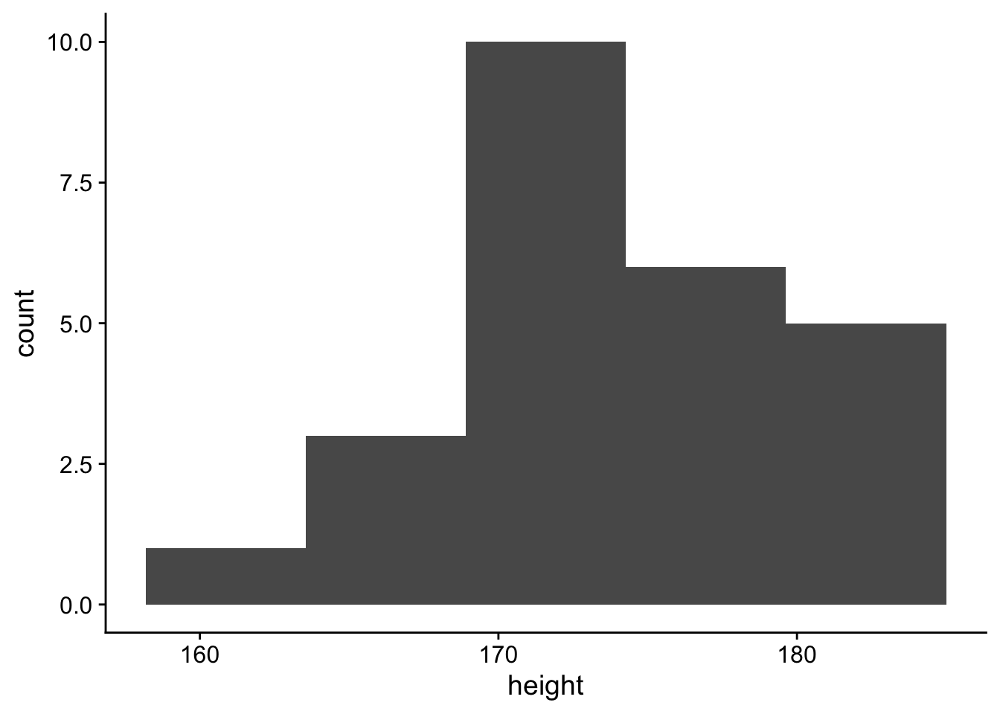
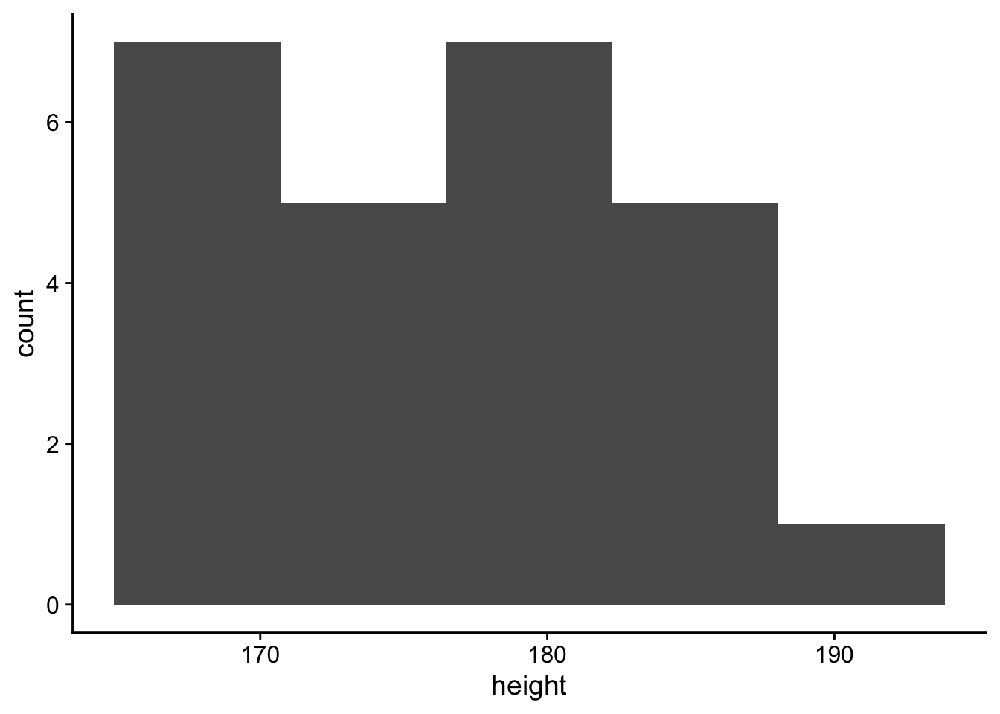
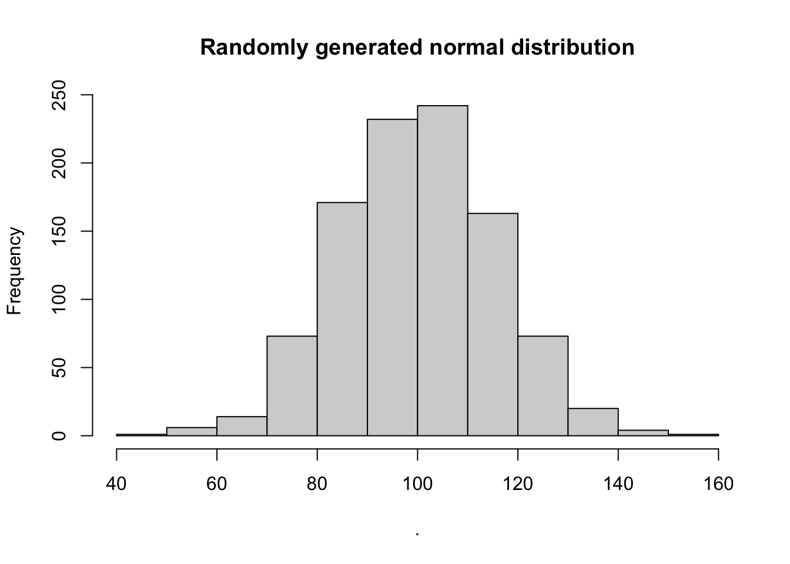
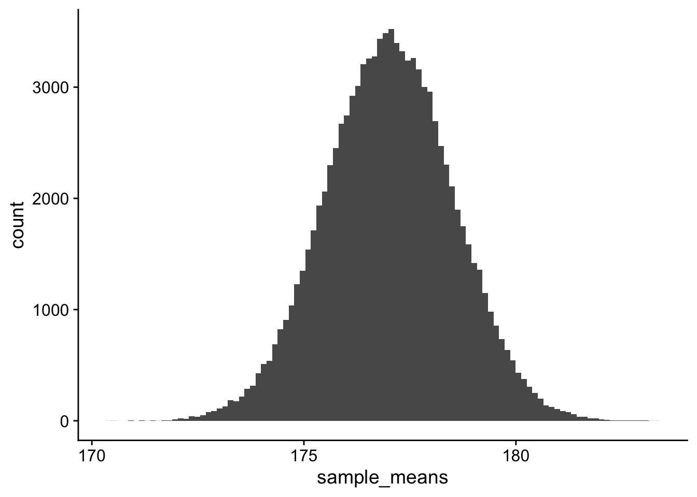

population_heights <- rnorm(n = 1000000, mean = 177,sd = 7.49)18 More examples of distributions
19 Distributions
This week you’ve encountered the notion of the distribution, which is just a way of describing all of the scores in a given set. We typically describe distributions in terms of tallies. For example if we were looking at the distribution of heights in a given group, the distribution would describe the number of individuals within that group that were a certain height (or more likely within a range of heights). I like to focus on distributions as having three different classifications.
population: the distribution of all scores of EVERYONE in an entire population, you almost NEVER have access to this.
sample: the empirically observed distribution of scores from a selected group (sample) within a population (this is what we typically have access to as scientists)
and, theoretical: a distribution that is derived from certain principles or assumptions by logical and mathematical reasoning, as opposed to one derived from real-world data obtained by empirical research (see APA). For example the normal distribution, Poisson distribution, the F-distribution, etc.
In this walkthrough we are going to use R to visualize the relationship between three types of distributions that are going to be particularly relevant for you this week:
19.1 Population distribution
We’re just extrapolate to play around with some numbers from this website: https://ourworldindata.org/human-height. According to this website the average height of men in North America (from 1996) is about 177 cm, with a standard deviation of 7.49. Height, it turns out is normally distributed.
Let’s just assume those numbers hold for the US. There are about 151 million men in the US. On my machine it would takes R about 10 secs to generate a distribution of 151 million heights with the above criteria, but it also eats up about 1.2 GB of RAM. Given that not everyone has 32GB of RAM laying around on their laptops, let’s just create a population of 1 million men (depending on your machine this might take a few seconds:
Congrats, in a matter of seconds you’ve created a population of 1 million heights! Before doing so, let’s turn this into a data frame / tibble containing columns for person and their corresponding height:
pacman::p_load(tidyverse)
person_id <- 1:1000000
pop_mens_heights <- tibble(person = person_id,
height = population_heights)Let’s take a look at this distribution.
pacman::p_load(cowplot)
ggplot(data = pop_mens_heights,mapping = aes(x=height)) +
geom_histogram(bins = sqrt(1000000)) + # ideal # of bins = sqrt of N
theme_cowplot()
And getting our summary stats for this population
vars n mean sd median trimmed mad min
person 1 1e+06 500000.50 288675.3 500000.50 500000.50 370650.00 1.00
height 2 1e+06 177.02 7.5 177.01 177.01 7.51 141.86
max range skew kurtosis se
person 1000000.00 999999.00 0 -1.2 288.68
height 214.51 72.65 0 0.0 0.0119.2 Sample
Of course we don’t have time or money to go around getting the height of 1 million men. Instead we get a sample of 25 from our population, pop_men_heights.
We can do this by:
# get a sample of heights
sample_mens_heights <- sample_n(pop_mens_heights, size = 25)
sample_mens_heights# A tibble: 25 × 2
person height
<int> <dbl>
1 731455 175.
2 930817 170.
3 658082 175.
4 642767 169.
5 903667 174.
6 631238 172.
7 553502 174.
8 106059 170.
9 857770 167.
10 407625 171.
# ℹ 15 more rowsNow, let’s take a look at the distribution and the summary stats of our sample:
# histogram
ggplot(data = sample_mens_heights,mapping = aes(x=height)) +
geom_histogram(bins = sqrt(25)) + # ideal # of bins = sqrt of N
theme_cowplot()
# summary stats
psych::describe(sample_mens_heights) vars n mean sd median trimmed mad min
person 1 25 660454.32 227428.65 658082.00 684792.10 264102.95 106059.00
height 2 25 173.19 5.86 171.65 173.14 4.48 162.55
max range skew kurtosis se
person 930817 824758.00 -0.79 -0.21 45485.73
height 184 21.45 0.35 -0.74 1.17Two things:
First, related to R, your histogram and summary stats are likely different from mine. This is because sample_n() pulls a random sample. If you resample the data using sample_n() you’re going to get different numbers every time around. FWIW, this is also true when we are getting our samples in research. To ensure that our numbers are identical we need to set the seed—set the manner R “randomly” (nothing in a computer is truly random) selects its sample. For example, if we rerun our sample using this code, our numbers will match:
# setting the seed to 2021
set.seed(2021)
# get a sample of heights
sample_mens_heights <- sample_n(pop_mens_heights, size = 25)
# histogram
ggplot(data = sample_mens_heights,mapping = aes(x=height)) +
geom_histogram(bins = sqrt(25)) + # ideal # of bins = sqrt of N
theme_cowplot()
# summary stats
psych::describe(sample_mens_heights) vars n mean sd median trimmed mad min
person 1 25 589528.52 282701.81 643236.0 602575.86 364602.47 66630.00
height 2 25 176.82 7.17 176.7 176.58 9.58 166.96
max range skew kurtosis se
person 976624.00 909994.00 -0.30 -1.23 56540.36
height 190.11 23.15 0.07 -1.38 1.43Second, tied to the conceptual material (and related to the discussion above), you’ll note that the distribution of heights in your sample is not identical to the population. This will be true for any sample that you take—the sample statistics are not identical to the population statistics. What we hope is that they are close enough that our sample approximates the population within a certain tolerance. More, no two samples are going to be exactly alike:
set.seed(2021)
sample1 <- sample_n(pop_mens_heights,size = 25)
sample2 <- sample_n(pop_mens_heights,size = 25)
psych::describe(sample1) vars n mean sd median trimmed mad min
person 1 25 589528.52 282701.81 643236.0 602575.86 364602.47 66630.00
height 2 25 176.82 7.17 176.7 176.58 9.58 166.96
max range skew kurtosis se
person 976624.00 909994.00 -0.30 -1.23 56540.36
height 190.11 23.15 0.07 -1.38 1.43psych::describe(sample2) vars n mean sd median trimmed mad min
person 1 25 428057.2 308820.34 353637.00 415141.71 360989.38 14244.00
height 2 25 175.6 7.03 176.81 176.05 6.26 156.31
max range skew kurtosis se
person 967537.00 953293.00 0.38 -1.30 61764.07
height 186.36 30.05 -0.69 0.27 1.41The fact that summary statistics vary from sample to sample, leads us to our next kind of distribution… the sampling distribution.
19.3 Sampling Distribution
The sampling distribution is a distribution built by the sampling and resampling of a population. A sampling distribution of a statistic shows every possible result that statistic can take in every possible sample from a population and how often each result happens. In practice, the generic characteristics of a sampling distribution are theoretical. That is they are developed by applying some small amount of observation to establish fundamental, and ultimately abstract principles. As an example, the normal distribution is a theoretical distribution that states that for any (approximately) randomly occurring measurement, such as height, a given percentage of scores should fall within specific ranges from the mean. Indeed, we’ve already generated a normal distribution in this walkthrough when we created our population. The function rnorm() generates a normal distribution of n scores, data with a prescribed mean and sd:

Returning to the Sampling Distribution, one claim is that if we were to sample and resample a population to infinity, the Sampling Distribution of Means (i.e. the distribution of those sample means) would be normal. More the the mean of this Sampling Distribution of Means should be identical to the population mean (177.0).
Obviously we can’t get an infinite number of samples, so this assumption / claim is based on underlying mathematical principles and formalisms. BUT… one of the nice things about computers is that while we can’t go to infinity, we can perform a really high number of samples. Let’s generate a sampling distribution of means by taking one-hundred-thousand different samples from our population of men, where each sample is 25 men
# imagine taking a hundred thousand different samples...
number_of_samples <- 100000
# where each sample is 25 men
N <- 25
sampling_dist_means <- tibble(num = 1:number_of_samples) %>%
group_by(num) %>%
# using sample for a vector, rather than sample_n for a data frame (tibble)
mutate(sample_means = mean(sample(pop_mens_heights$height, size = N, replace = TRUE)),
)Let’s look at our sampling distribution of means:
# histogram
ggplot(data = sampling_dist_means,mapping = aes(x=sample_means)) +
geom_histogram(bins = sqrt(10000)) + # ideal # of bins = sqrt of N
theme_cowplot()
# summary stats
psych::describe(sampling_dist_means) vars n mean sd median trimmed mad min
num 1 1e+05 50000.50 28867.66 50000.50 50000.50 37065.00 1.00
sample_means 2 1e+05 177.02 1.50 177.02 177.02 1.51 170.42
max range skew kurtosis se
num 100000.00 99999.00 0 -1.2 91.29
sample_means 183.35 12.93 0 0.0 0.00Look at that!
One last bit with the Sampling Distribution of Means. The standard deviation of the Sampling Distribution of Means is known as the standard error. You may have likely encountered this term before as a measure of confidence of the mean of your sample as it relates to the true mean of the population. When working with a given sample, standard error is approximated as the standard deviation of the sample divided-by the square root of the number of scores…
\[\frac{standard\space deviation}{N}\] For example the standard error for this single sample is \(7.54/\sqrt{25}\) or 7.54/5 or 1.51. Note that psych::describe() produces the se at the send of its table:
vars n mean sd median trimmed mad min
person 1 25 589528.52 282701.81 643236.0 602575.86 364602.47 66630.00
height 2 25 176.82 7.17 176.7 176.58 9.58 166.96
max range skew kurtosis se
person 976624.00 909994.00 -0.30 -1.23 56540.36
height 190.11 23.15 0.07 -1.38 1.43In this case the standard error of the sample (1.51) is pretty close to the standard deviation of the sampling distribution (1.49). Given that we are dividing by \(\sqrt{N}\) it should be apparent that the standard error decreases as we increase or sample size. Thus, with increase sample size we are more confident that a given sample accurately represents the whole population.
Try rerunning the code, but this time with sample sizes of 5, 50, and 500. What happens to your distributions and your measures of central tendency?